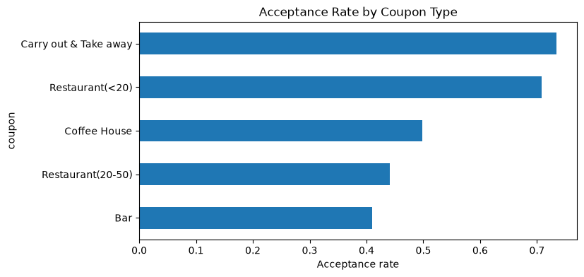
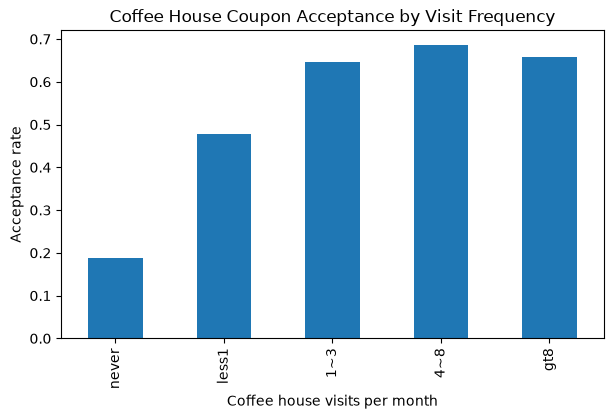
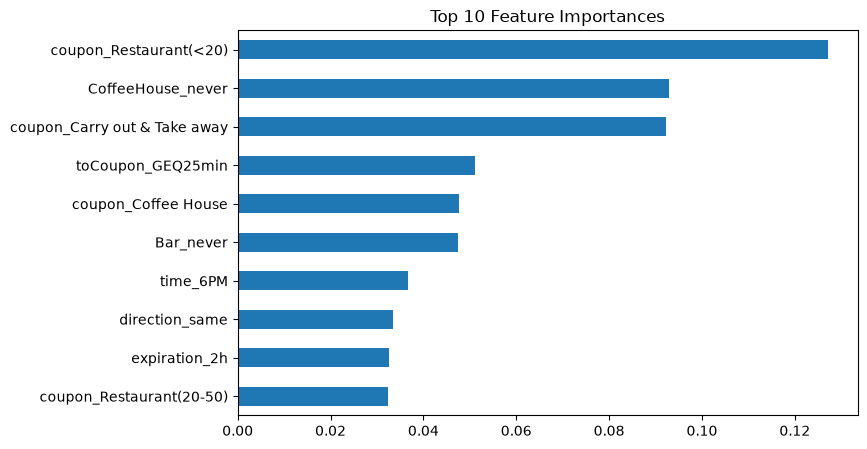
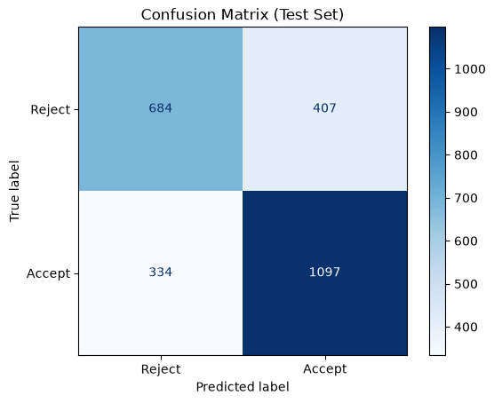

Targeting in-car coupons with a decision tree
Which drivers will actually use a coupon? I built a decision tree on 12,000+ survey responses to predict coupon acceptance, then turned it into a targeting strategy for a navigation app or local business.
Sending coupons only to drivers the model picks would raise the acceptance rate from 57% to 73%, while still reaching about three-quarters of interested drivers.
- The tuned decision tree is 70.6% accurate, 14 points above the “send to everyone” baseline of 56.8%.
- Coupon type and past habits matter most: carry-out and cheap-restaurant coupons are popular, bar and expensive-restaurant coupons are not.
- On the test set, the model would send about 40% fewer coupons and still reach 77% of drivers who would accept.
- Recommendation: pilot model-based targeting with an A/B test, and refocus low-performing offers on regular customers.
What the data says
12,684 survey responses → 12,610 after cleaning · target: accept (1) or reject (0)
Data & preparation
- Source: In-Vehicle Coupon Recommendation (UCI). Drivers were shown a coupon in a driving scenario and asked if they would accept it.
- Dropped one column that was 99% empty and one with the same value in every row; removed 74 duplicates; filled the few missing visit-frequency answers (1–2%) with the most common value.
- Classes are fairly balanced: 56.8% accepted.


What drives acceptance
| Segment | Acceptance rate |
|---|---|
| Carry-out & takeaway coupons | 73% |
| Cheap restaurant (<$20) coupons | 71% |
| Expensive restaurant ($20–50) coupons | 44% |
| Bar coupons | 41% |
| Coffee coupon · never visits coffee houses | 19% |
| Coffee coupon · regular coffee-house visitor | 65–69% |
| Coupon valid for 1 day vs 2 hours | 62% vs 50% |
| Driving with friends | 67% |
Modelling approach
An unrestricted tree memorised the training data (99.8% train vs 69.5% test accuracy). To fix this I tuned the tree's depth and minimum leaf size with 5-fold GridSearchCV across 24 combinations. Accuracy peaked at depth 8 (CV 70.1%) and fell for deeper trees.
On the held-out test set the final tree reached 70.6% accuracy, with precision 0.73 and recall 0.77 for “accept”.


How a business should use it
Turning the model into a coupon-targeting strategy
Target coupons instead of sending them to everyone
Only send a coupon when the model predicts the driver will accept. Fewer coupons go out, fewer drivers get irrelevant offers, and a much higher share are used.
Evidence: of 2,522 test drivers, the model picked 1,504 (≈60%); 73% of them accepted, vs 57% overall. It reached 1,097 of the 1,431 drivers who would accept (77%).
Lead with carry-out and cheap-restaurant offers
These are the easiest wins and should make up most of the campaign volume.
Evidence: 73% and 71% acceptance, and coupon type is the model's strongest factor.
Send bar and coffee coupons only to existing customers
Low-performing categories work much better when they go to people who already visit those places.
Evidence: only 19% of non-coffee-drinkers accept a coffee coupon vs 65–69% of regulars; “never visits bars” is a top-6 factor; bar coupons overall get 41%.
Design the offer for convenience
Give coupons a full day to use rather than two hours, prioritise venues that are close by, and favour moments when drivers have friends in the car.
Evidence: 62% acceptance for 1-day vs 50% for 2-hour coupons; 67% with friends; “venue 25+ minutes away” is a top-4 factor.
The trade-off to manage
The model makes two kinds of mistakes: 407 wasted coupons (sent to drivers who reject) and 334 missed customers (not sent to drivers who would accept). If coupons are cheap, the business can lower the threshold to reach more customers; if they're costly, raise it to waste fewer.
Risks & next steps
- The data is survey answers to hypothetical scenarios, so validate with a real A/B test before full rollout.
- About 30% of predictions are still wrong; an ensemble such as a random forest could improve accuracy.
All figures come from my analysis of the UCI In-Vehicle Coupon Recommendation dataset. “≈40% fewer coupons” and “77% reached” are calculated from the test-set confusion matrix: (1,097 + 407) ÷ 2,522 ≈ 60% sent; 1,097 ÷ 1,431 ≈ 77%.